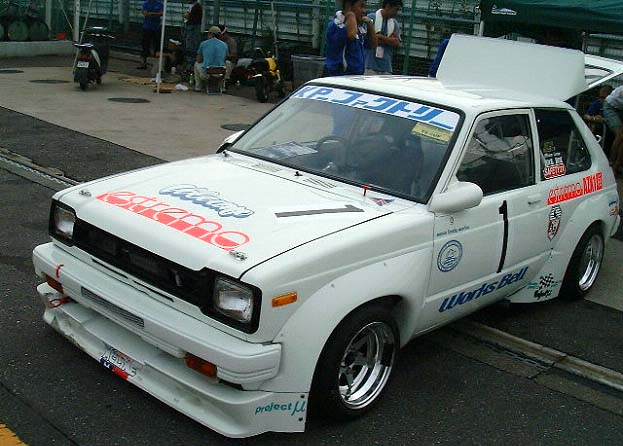

JCCA TSUKUBA ENDURANCE MEETING TSカップ最終戦
名称：JCCAクラシックカーフェスティバル 筑波エンデュランスミーティング
会場：筑波サーキット国内公認コース（全長2,045km） 茨城県結城郡千代川村大字村岡
主催，レース主管：日本クラシックカー協会（JCCA）
レース公認：日本自動車連盟（JAF）
会場：筑波サーキット国内公認コース（全長2,045km） 茨城県結城郡千代川村大字村岡
主催，レース主管：日本クラシックカー協会（JCCA）
レース公認：日本自動車連盟（JAF）
レースレポート
開催日：2004年8月8日（日）
天候：晴れ
参加クラス：TSカップ TS-1クラス（1300ccを境にTS-1，TS-2に別けられレースは2クラス混走）
参加台数： TS-1クラス KP61 1台 / TS-2クラス 310サニー4台 （2クラス合計5台）
車名：KP-ファクトリースターレット （車番1）
ドライバー：吉水 滋浩
監督：二瓶 剛志
天候：晴れ
参加クラス：TSカップ TS-1クラス（1300ccを境にTS-1，TS-2に別けられレースは2クラス混走）
参加台数： TS-1クラス KP61 1台 / TS-2クラス 310サニー4台 （2クラス合計5台）
車名：KP-ファクトリースターレット （車番1）
ドライバー：吉水 滋浩
監督：二瓶 剛志

リザルト
予選
| 順位 | 車番 | クラス | 順 | ドライバー | 型式 | 車名 | ベストタイム |
|---|---|---|---|---|---|---|---|
| 1 | 30 | 2 | 1 | 野部 賢一 | PB310 | チームポイズンプライベートサニー | 1'07.198 |
| 2 | 23 | 2 | 2 | 千葉 和久 | B310 | 千葉モータースピットロードサニー | 1'07.370 |
| 3 | 16 | 2 | 3 | 佐野 孝一 | PB310 | OGURAデザイン工房ピットロードサニー | 1'07.639 |
| 4 | 1 | 1 | 1 | 吉水 滋浩 | KP61 | ＫＰファクトリースターレット | 1'07.988 |
| 5 | 44 | 2 | 4 | 神崎 猛 | HB310 | ＢＣＣ Ｆａｃｔｏｒｙサニー | 1'08.743 |
決勝
| 順位 | 車番 | クラス | 順 | ドライバー | 型式 | 車名 | 周回 | 所要時間 |
|---|---|---|---|---|---|---|---|---|
| 1 | 30 | 2 | 1 | 野部 賢一 | PB310 | チームポイズンプライベートサニー | 10 | 11'23.904 |
| 2 | 16 | 2 | 2 | 佐野 孝一 | PB310 | OGURAデザイン工房ピットロードサニー | 10 | 11'24.706 |
| 3 | 1 | 1 | 1 | 吉水 滋浩 | KP61 | ＫＰファクトリースターレット | 10 | 11'36.315 |
| 4 | 44 | 2 | 3 | 神崎 猛 | HB310 | ＢＣＣ Ｆａｃｔｏｒｙサニー | 10 | 11'39.455 |
| 5 | 23 | 2 | 4 | 千葉 和久 | B310 | 千葉モータースピットロードサニー | 9 | 1Lap |
| スタート | 10:45'58.000 |
|---|---|
| フィニッシュ | 10:57'21.904 |
| 参加台数 / 出走台数 / 完走台数 | 5台 / 5台 / 5台 |
| ベストタイム | No.16 （佐野 孝一） 1'06.504 （9/10周） 111.700km/h |
| クラス | 1:TS-1 2:TS-2 |
※赤旗中断により10周終了時でレース成立